Abnormal Uterine Bleeding
- Build an approach, don't memorize definitions. Dr. Arntfield says this outright. Oligomenorrhea, menorrhagia, menometrorrhagia and the rest all collapse into one bucket: any change in frequency, duration, amount of flow, or bleeding between cycles.
- Divide by age first. Pre-pubertal · reproductive age (with adolescence and perimenopause as special cases) · postmenopausal. This lecture is the reproductive-age group only.
- PALM-COEIN splits causes into structural (Polyp, Adenomyosis, Leiomyoma, Malignancy & hyperplasia) and non-structural (Coagulopathy, Ovulatory dysfunction, Endometrial, Iatrogenic, Not yet classified).
- Anovulation is the single biggest cause, and it is an HPO-axis problem. GnRH must be pulsatile; stress, body mass, exercise and chronic disease break that. Then work down the axis: pituitary (TSH, prolactin), ovary, uterus, outflow tract.
- Always rule out pregnancy. It is the most common cause of amenorrhea and a frequent cause of unscheduled bleeding — including in the 13-year-old.
- Ask specifically about contraception. Women do not list it when you ask "what medications are you on," yet it is a leading iatrogenic cause of an abnormal bleeding pattern.
- Two age-based red flags: menarche can unmask an inherited coagulopathy (most commonly von Willebrand diseaseThe most common inherited bleeding disorder. Heavy menses from the very first period is a classic presentation.), and bleeding over age 40 needs an endometrial biopsy — rates of malignancy climb, and you have to prove the endometrium is normal rather than assume it is perimenopause.
- Treatment is cause-specific, but usually ends up being cycle control. Start conservative and move up: non-hormonal (iron, NSAIDs, tranexamic acid) → hormonal (OCP, Depo, Mirena, Visanne, GnRH agonist) → minimally invasive → surgery.
Learning Objectives
- Define the normal amount of bleeding in a menstrual cycle.
- List the components of PALM-COEIN.
- Identify main causes of anovulation.
- Analyze findings on pelvic examination using an understanding of causes of AUB.
- Identify the structural causes of AUB on pathology.
- Describe the clinical presentations of cervical cancer or endometrial cancer with regards to AUB.
- List investigations used in the diagnosis of AUB.
- Select appropriate medical treatments for AUB.
Dr. Shannon Arntfield's 40-minute module. She explicitly hands off objectives 5 and 6 to other lecturers — the structural causes on pathology are Dr. Weir's 4.12, and the postmenopausal bleeding side of endometrial cancer sits in a separate Week 2 repro lecture. The normal menstrual cycle underneath all of this is 3.3, and the HPO axis is 2.6. She also flags what this talk deliberately skips: pediatric bleeding (except precocious puberty and sexual abuse, covered in Peds) and PCOS (covered in Endo).
Etiology
What counts as abnormal, how to carve up the problem, and why anovulation sits at the centre of it.
Normal vs Abnormal
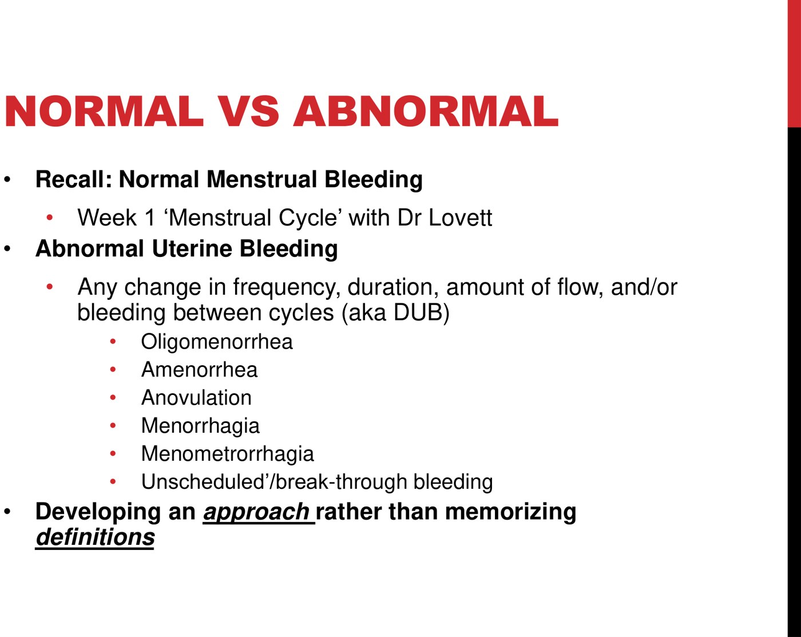
The deck sends you to Week 1 for the normal parameters rather than restating them, so here they are, since objective 1 asks for a number:
| Parameter | Normal | Outside normal |
|---|---|---|
| Frequency | Every 24–38 days | <24 d = frequent · >38 d = oligomenorrhea · none = amenorrhea |
| Duration | ≤8 days (typically 2–7) | >8 d = prolonged |
| Volume | 5–80 mL per cycle | >80 mL = heavy menstrual bleeding, or any volume heavy enough to interfere with quality of life |
| Regularity | Predictable cycle to cycle | Irregular timing, or bleeding between cycles |
The 24–38 day / ≤8 day / 5–80 mL figures are the FIGO parameters and are not on these slides — they come from the FIGO terminology system as reproduced in the NIH StatPearls chapter on abnormal uterine bleeding, checked against the same 24–38 day definition used in the Alberta primary-care AUB pathway. In practice nobody measures 80 mL; the clinically useful version is "heavy enough to interfere with her life," which is why the history questions below are about pad changes and clots rather than millilitres.
Approach: Divide by Age
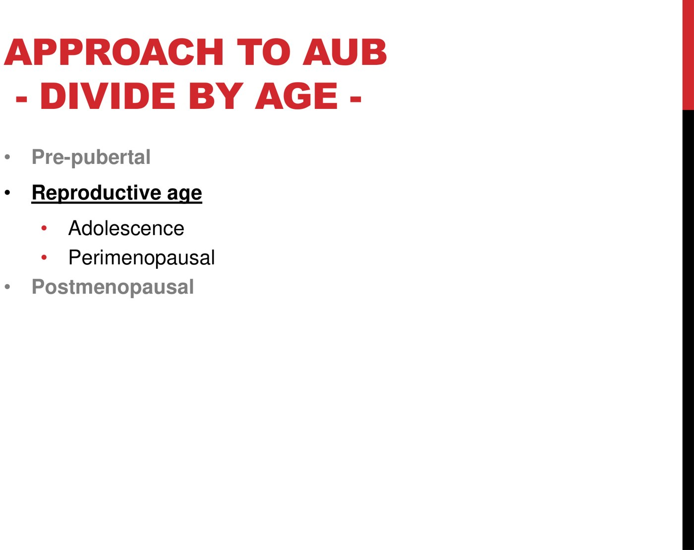
Age changes the differential enough that it earns the top of the algorithm. The pre-pubertal patient raises precocious puberty and sexual abuse; the postmenopausal patient is a cancer work-up until proven otherwise. In between, the differential is the one below — but weighted differently at 15 than at 45.
PALM-COEIN
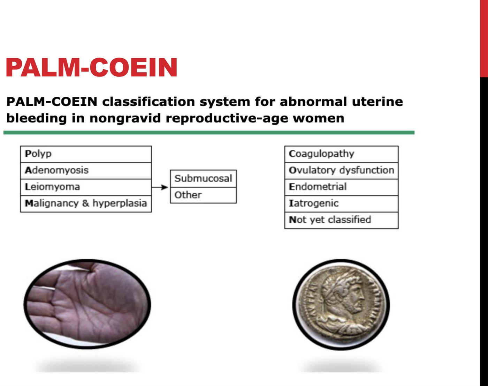
The FIGO system. Left column = structural (you can see it). Right column = non-structural (you cannot).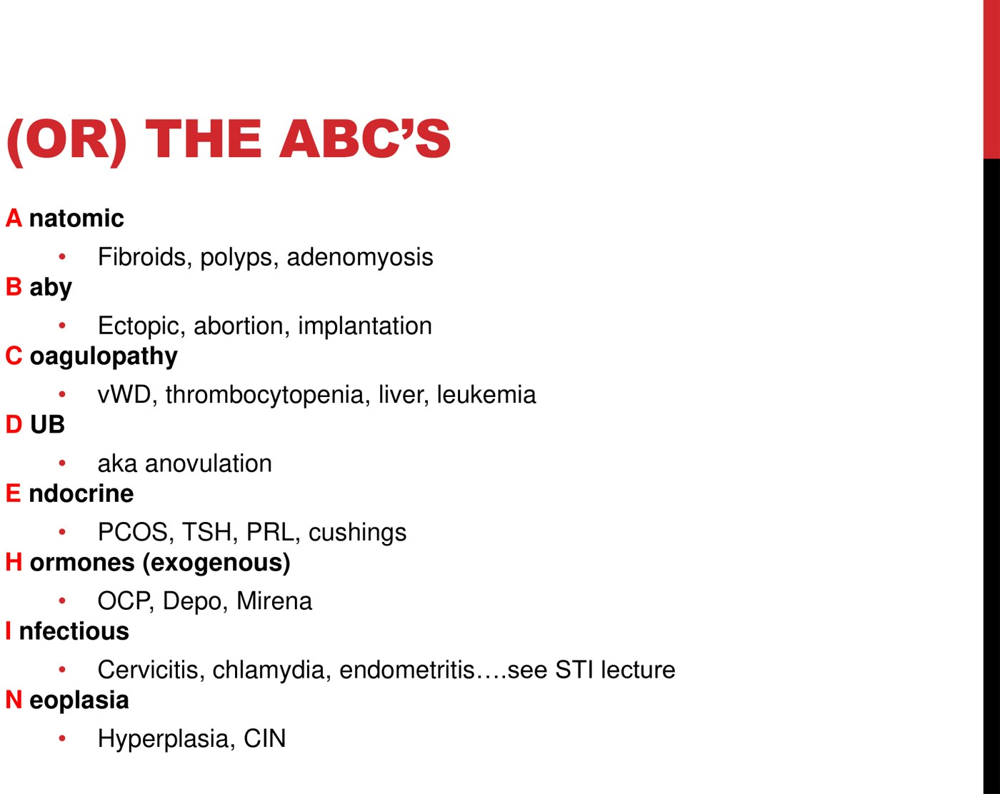
Her alternative mnemonic. Use whichever sticks — but note it catches two things PALM-COEIN hides: Baby and Infection.| Letter | Cause | What it is |
|---|---|---|
| P | Polyp | Endometrial or endocervical outgrowth |
| A | Adenomyosis | Endometrium grown into the myometrium — a bulky, boggy, tender uterus |
| L | Leiomyoma | Fibroid. Subclassified by location — submucosal ones bleed most |
| M | Malignancy & hyperplasia | Endometrial hyperplasia/carcinoma, cervical cancer, CIN |
| C | Coagulopathy | von Willebrand disease, thrombocytopenia, liver disease, leukemia |
| O | Ovulatory dysfunction | Anovulation — the biggest single bucket. Expanded below |
| E | Endometrial | A primary endometrial/local haemostatic problem with a structurally normal uterus |
| I | Iatrogenic | Hormonal contraception, anticoagulants — you have to ask |
| N | Not yet classified | Everything unfitted, e.g. AV malformation |
Dr. Arntfield says she would personally collapse Ovulatory dysfunction and Endometrial into one idea, because in practice they get investigated identically — bloodwork plus consideration of an endometrial biopsy. She also points out that iatrogenic is where the patient's contraception and blood thinners belong, and jokes that with her collapsing "the COEIN may be more of a COIN than a COEIN." Take that as permission to hold the mnemonic loosely.
PALM-COEIN is explicitly a system for non-gravid women, and infection has no letter. So you must add them back manually: pregnancy (the most common cause of amenorrhea, and a frequent cause of unscheduled bleeding) and infection — an erosive cervicitis or a bad herpes outbreak can produce spotting. Both appear in her ABC's list, which is arguably why she offers it. Infection is covered in 4.6; early pregnancy bleeding is 4.9.
Anovulation: the Main Underlying Cause
Her framing: AUB is the umbrella, anovulation is the biggest thing underneath it — so ask the next question, what causes anovulation? The answer is the HPO axis, one level at a time.
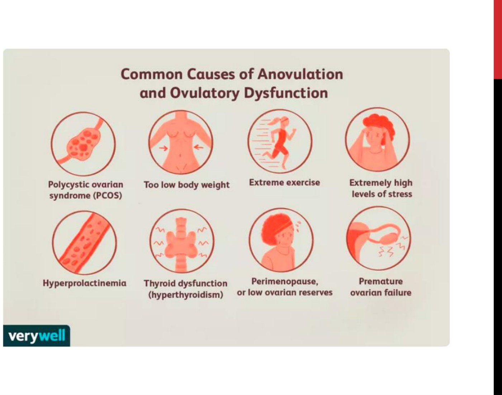
![Slide showing five levels labelled H, P, O, U and V down the left with shapes representing hypothalamus, pituitary, ovary, uterus and vagina, mapped to boxes labelled hypothalamic, pituitary, ovarian, uterine and outflow tract; a red box groups hypothalamic and pituitary under feedback mechanisms listing pulsatile GnRH, TSH and PRL, FSH and LH, and E and P, while a green box groups ovarian, uterine and outflow tract under anatomic questions did they form and is their function compromised or interrupted; along the bottom, history, physical exam, lab testing and imaging.](../../../../assets/images/week-4/abnormal-uterine-bleeding/axis-levels.jpg) The whole framework. Top of the axis = hormonal (history + labs). Bottom = anatomic (exam + imaging). That split is what tells you which tests to order.
The whole framework. Top of the axis = hormonal (history + labs). Bottom = anatomic (exam + imaging). That split is what tells you which tests to order.
![Slide titled Feedback loops showing the hypothalamus releasing GnRH to the anterior pituitary, which releases LH and FSH to the ovary, producing estrogen and progesterone acting on the uterus, with positive feedback on days 12 to 14 and negative feedback over most of the cycle; annotations state GnRH must be pulsatile and things that interfere are stress, body mass (exercise, anorexia, malnutrition) and chronic disease; what else does the pituitary produce - TSH and PRL, abnormalities in any of them interfere; and if the ovary doesn't form, gets hurt, or the above organs aren't functioning properly, the E and P changes may not allow the system to function.](../../../../assets/images/week-4/abnormal-uterine-bleeding/feedback-loops.jpg) Her annotated version — the three annotations are the teaching content, not the loop diagram. Read them in order down the axis.
Her annotated version — the three annotations are the teaching content, not the loop diagram. Read them in order down the axis.
History and Physical Exam
The point of the mnemonic is that it tells you what to look for. Objective 4 is about reading exam findings through the differential.
Why the Differential Comes First
"Doing a battery of tests, not necessarily knowing what you're looking for, can get you too far down a rabbit hole" — her example being an incidental finding with no clinical relevance. If you hold the differential in your head first, you target the exam and the investigations, and you interpret what you find. This is the whole logic of objective 4, and it is why the PALM-COEIN box is pasted in the corner of every one of her exam and workup slides.
Two history points she singles out:
- Ask about contraception by name. "Most women, when asked do you take any medications, will not include their contraceptive choice." A Mirena is her example — the patient does not think of it as a medication at all. Iatrogenic bleeding is common and free to diagnose if you ask.
- Ask about pregnancy risk in private. A 13- or 14-year-old may not disclose sexual activity, or a history of trauma or abuse, with a parent in the room. She frames getting the patient alone in a safe environment as part of the history, not an optional courtesy.
Physical Examination
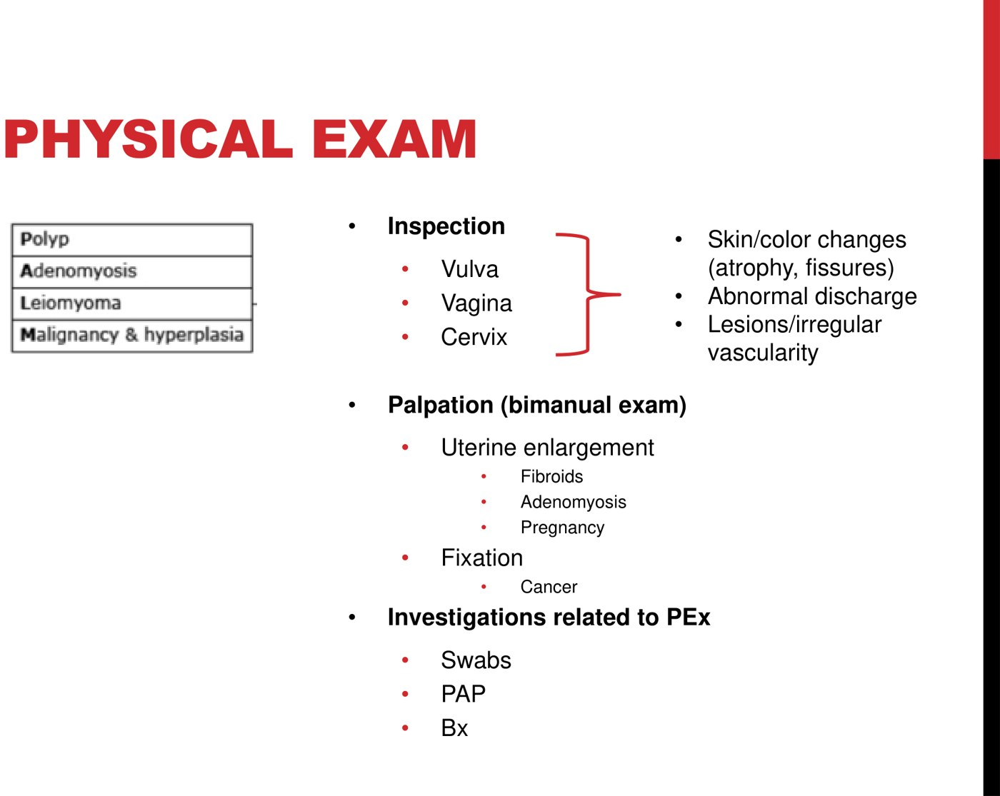
| Manoeuvre | What you are looking for | Maps to |
|---|---|---|
| Inspection — vulva, vagina, cervix | Skin and colour change, atrophy, fissures · abnormal discharge · lesions or irregular vascularity on the cervix | Malignancy, infection, atrophy |
| Bimanual palpation — two fingers in the vagina, one hand above the symphysis, lifting the uterus and ovaries into the abdominal hand | Size, mobility and descent (prolapse) of the pelvic organs | Leiomyoma, adenomyosis, pregnancy, malignancy |
| Fixation | A pelvis that feels fixed rather than mobile | Malignancy — cervical, and some ovarian |
Enlargement alone does not distinguish the causes — pregnancy, a bulky adenomyotic uterus, and fibroids all enlarge it, and so can cancer. What separates malignancy out on exam is fixation: benign enlargement stays mobile, while an infiltrating tumour tethers the pelvic structures. That is the exam finding to actually chase.
Bring your instruments in with you. Many gynecologic investigations are part of the exam — swabs, the Pap, and targeted biopsies. If you worked out the differential beforehand, you know what to have on the tray, and you do not have to bring the patient back.
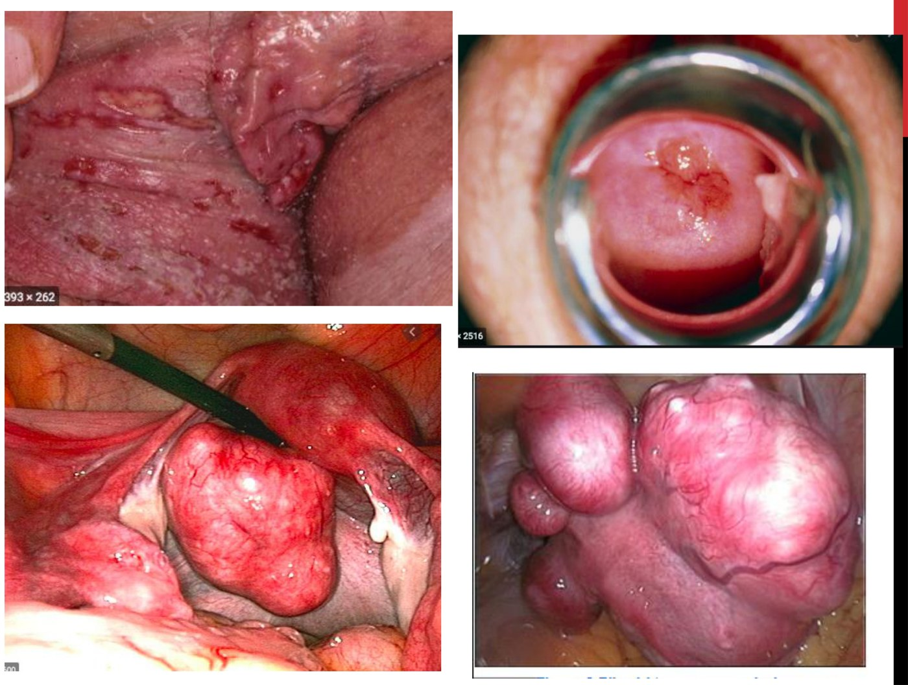
For the hormonal / endocrine (COEIN) half of the exam she moves to general appearance, which her slide illustrates with clinical photographs rather than text:
- Body habitus and BMI — signs of the female athlete triad, anorexia or bulimia; or the high body mass associated with PCOS and with endometrial cancer risk.
- Bruising and petechiae — evidence of a coagulopathy.
- Cushingoid appearance — a recognizable pattern worth pausing on.
- Signs of thyroid disease, galactorrhea (prolactin), and hirsutism and acne (androgens, PCOS).
Investigations
Chosen from the differential, and ordered in the right sequence.
The Workup
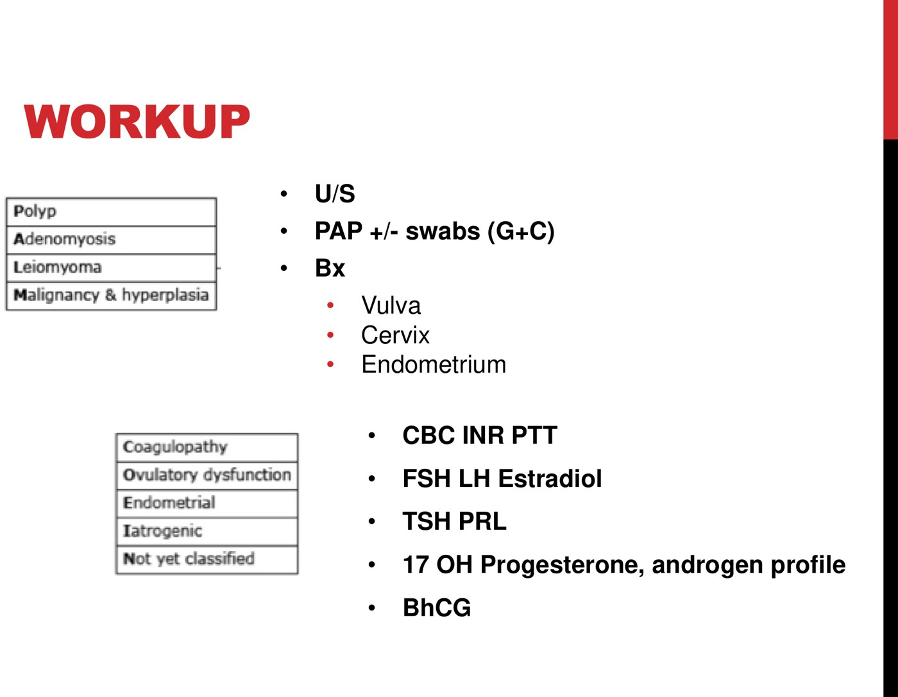
| Question | Test | Why that one |
|---|---|---|
| Is there a structural lesion? | Pelvic ultrasound | The go-to in gynecology, preferred over CT — no radiation, and genuinely better than CT for visualizing pelvic structures including the ovaries |
| Infection or cervical disease? | Pap ± swabs (gonorrhea, chlamydia) | Taken during the exam you are already doing |
| Is the tissue abnormal? | Targeted biopsy — vulva, cervix or endometrium | "Targeted" is the operative word: biopsy the lesion you saw |
| Coagulopathy? | CBC, INR, PTT | Anemia from the bleeding itself, plus the coagulation profile |
| Ovulatory / HPO dysfunction? | FSH, LH, estradiol, TSH, prolactin | Walks the axis from pituitary down |
| PCOS or Cushing's? | 17-OH progesterone, androgen profile | Only if the history and exam point there |
| Pregnant? | β-hCG | Her fourth mention. Also a safety step — see below |
Her point about sequencing: you do not want to biopsy the inside of a uterus that contains a pregnancy. So β-hCG is not just a diagnostic test, it is a gate you pass before instrumenting the uterus. The usual real-world order is bloodwork → ultrasound → Pap and biopsy, with the exam-based tests folded into whichever visit makes sense.
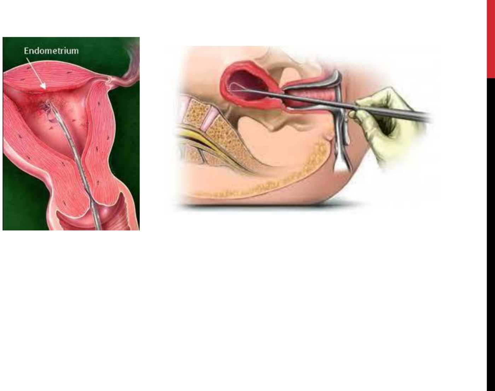
Medical Treatment
Cause-specific in principle, cycle control in practice.
The Ladder
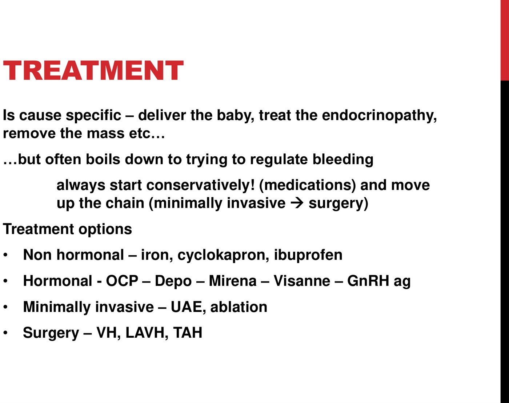
| Tier | Agents | What it achieves |
|---|---|---|
| Non-hormonal | Iron · NSAIDs (ibuprofen) · tranexamic acid (Cyklokapron) | Reduces the amount of flow. Does not touch regularity. Baseline therapy for a mild pattern |
| Hormonal — combined | OCP in any route: oral, transdermal patch, vaginal ring | First-line for mild-to-moderate bleeding. Reduces both intensity and irregularity |
| Hormonal — progestin only | Depo-Provera · Mirena · Visanne (dienogest) | No estrogen — the option when estrogen is contraindicated. All three often induce amenorrhea |
| GnRH agonist | Lupron | Shuts the axis down at the hypothalamus. Excellent for acute haemorrhage; heavy menopausal side-effect profile, so not for long-term use |
| Minimally invasive / surgical | UAE, endometrial ablation · VH, LAVH, TAH | Named on the slide but explicitly outside this lecture's scope |
Depo, Mirena and Visanne each have a high likelihood of stopping her periods altogether. Dr. Arntfield is emphatic that you must clarify this in advance, because most women read "no periods" as pathological or dangerous — and they have reasonable grounds for thinking so. So ask what her goal is: if she does not want periods, that points you toward these agents; if a monthly period matters to her, it points you away from them. The same question decides between the options, not just whether to warn her.
![Slide titled Treatment - concepts stating that contraceptive choices almost always have non-contraceptive benefits which is what is capitalized on when using hormonal medications for cycle control and symptom management: progesterone of any type is a lawnmower for the endometrium reducing flow over time; Diane 35 and Yaz are anti-androgenic for PCOS; Lupron or GnRH agonist gives hypothalamic suppression. Choice of agent boils down to patient preference, cost considerations, side-effect profile, and ease and efficacy over time: OCP oral route often preferred but daily remembering required; Depo and Mirena covered by ODB with sustained therapy window but injection or foreign-body concerns; Lupron high side effect profile, very costly, but immediate and effective; TXA non-hormonal and PRN only, but costly and only reduces intensity, not duration or regularity.](../../../../assets/images/week-4/abnormal-uterine-bleeding/treatment-concepts.jpg)
- The mechanism, in her words: "If estrogen is the fertilizer, progesterone is the lawnmower." Any progestin thins the endometrium over time, giving shorter, lighter cycles — or none at all.
- You are exploiting non-contraceptive benefit. Contraceptives almost always have one, and cycle control is the one being used here.
- Anti-androgenic options for PCOS: Diane-35 (cyproterone acetate) and Yaz (drospirenoneA progestin with anti-androgenic and anti-mineralocorticoid activity, used where the cosmetic androgenic features of PCOS matter.) carry an anti-androgen in place of a standard progestin — well suited to PCOS with hirsutism and acne.
- Choice is driven by patient preference, cost, side effects and ease. The OCP's oral route is often preferred — but it needs daily remembering, so ask her whether that will actually work for her. Depo and Mirena are covered under ODB and last 3 months and 5 years respectively, but some patients decline injections or a foreign body. Tranexamic acid is effective but costs roughly a dollar a pill, so think twice without a drug plan.
The slides name agents but not doses. From the Alberta Enhanced Primary Care Pathway for AUB (Sept 2020), the standard outpatient regimens are tranexamic acid 1000 mg PO QID or 1500 mg PO TID for 5 days with menses, taken with food; NSAIDs with menses — ibuprofen 400 mg PO q6h × 5 days, or naproxen 500 mg PO BID × 5 days; and for progestin-only cycle control, Prometrium 100–200 mg PO nightly (daily, not cyclic), Micronor or Visanne, Depo-Provera, or a Mirena IUD. Add iron whenever the CBC/ferritin warrants it. These are Canadian primary-care doses, not from Dr. Arntfield's slides — check them against local practice before prescribing.
Adolescence, Perimenopause, and the Unstable Patient
Both age extremes of reproductive life have higher rates of anovulation — plus one age-specific danger each.
What the Two Groups Share
Group them in your head: adolescents and perimenopausal women both have an HPO axis that is not reliably ovulating, so both have higher rates of irregular, unpredictable, heavy bleeding than the mid-reproductive-age group. Where they differ is the thing you must not miss.
![Slide titled Adolescence with a differential diagnosis column listing anovulation from an immature HPO axis taking up to 2 years to mature to regular cycles, eating disorder or excess exercise, coagulopathy where menarche can unmask undiagnosed blood dyscrasia most commonly von Willebrand disease, and pregnancy - remember beta hCG; and a treatment column stating mild equals iron plus reassurance, moderate equals low dose OCP as first line, and severe or acute equals serial hemoglobin, coagulation studies and IV estrogen.](../../../../assets/images/week-4/abnormal-uterine-bleeding/adolescence.jpg) Adolescence. The differential on the left, the severity-graded treatment on the right.
Adolescence. The differential on the left, the severity-graded treatment on the right.
![Slide titled Perimenopausal stating it is a huge reason for referrals and ER visits, usually due to anovulation but rates of malignancy are higher so remember to biopsy; many request or require treatment with the same options as the reproductive time frame, trying to avoid invasive surgery; and recognizing it can be severe, incapacitating and extreme, with a recent case of ventricular fibrillation arrest resuscitated and found to have a hemoglobin of 38, where an astute clinician asked about cycles and found previously 28-day cycles with 5 days of flow changing a pad every 4 hours, now 14 to 45-day cycles with 2 to 14 days of flow changing a pad more than hourly with flooding and clots.](../../../../assets/images/week-4/abnormal-uterine-bleeding/perimenopausal.jpg) Perimenopause. Same anovulation, but malignancy rates are climbing — and the case at the bottom is why you take the bleeding history seriously.
Perimenopause. Same anovulation, but malignancy rates are climbing — and the case at the bottom is why you take the bleeding history seriously.
Adolescence
- The immature HPO axis takes about 2 years to mature. Many girls will take that long to develop regular cycles — so anovulation here is often physiological.
- But "it will get better" is not the same as "don't treat." She makes this point from a call shift days before recording: a 14-year-old in the department needing intensive treatment for genuinely heavy cycles. Treatment is graded — mild: iron + reassurance · moderate: low-dose OCP first line · severe/acute: serial hemoglobin, coagulation studies, IV estrogen.
- This is the life stage an eating disorder develops or entrenches, and a very common time to be heavily athletically involved — so the female athlete triad belongs on the differential.
- Menarche may be the first time an inherited coagulopathy is unmasked. Absent an injury, the onset of periods can be the presenting event for an undiagnosed blood dyscrasia — most commonly von Willebrand disease. Keep it in mind for the adolescent bleeding very heavily from the start.
- Pregnancy risk exists and may be hard to elicit with a parent present. See the history note in Part 2.
Perimenopause
- A huge driver of referrals and ER visits, and usually anovulatory — but that is the trap.
- Biopsy. The standard of care is that any woman over 40 presenting with abnormal bleeding gets an endometrial biopsy — even if you are confident it is just the menopausal transition. The point is to prove the endometrium is normal, because malignancy rates rise with age. She notes there has been debate about dropping the threshold to 35.
- Treatment options are the same as in the reproductive age group, and the goal is still to try to avoid invasive surgery.
- It can be genuinely severe. Her worst case: a woman who arrived in ventricular fibrillation arrest, was resuscitated, and was found to have a hemoglobin of 38 — entirely from heavy periods she had been unable to get care for. An astute clinician got the history: cycles that had gone from 28 days with 5 days of flow and a pad every 4 hours, to 14–45 day cycles with 2–14 days of flow, a pad more than hourly, flooding and clots.
Worth knowing that this number differs by country, and Dr. Arntfield is teaching you the Canadian one. The SOGC position is endometrial sampling for AUB in women over 40, or weighing ≥90 kg, or younger women with endometrial cancer risk factors. The Alberta primary-care pathway operationalizes it as >40 with risk factors and irregular periods for 3–6 months, and lists those risk factors as: age >40, obesity (BMI >30), nulliparity, PCOS with irregular cycles, diabetes, current tamoxifen, HNPCC, unopposed estrogen exposure. ACOG, by contrast, uses age 45. If a question asks for a number, answer 40 — and note that the pathway also says not to assess endometrial thickness in a premenopausal patient, which is a common error carried over from the postmenopausal algorithm.
The Unstable Patient
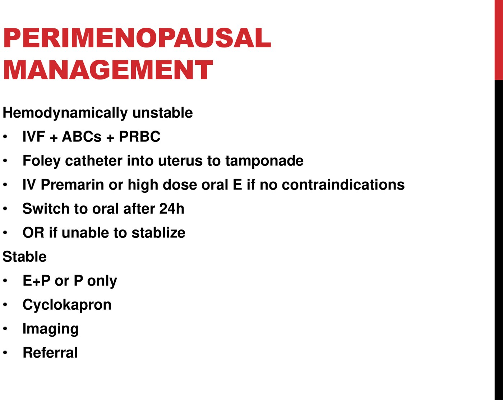
Built from Dr. Shannon Arntfield's "Approach to Abnormal Uterine Bleeding" module (40 min): the recorded lecture and its 30-slide deck. All figures are slides from that deck; the anovulation infographic on the slide is credited to Verywell. The auto-transcript of this lecture is badly corrupted and was not trusted for any fact — it renders the lecturer's own name as "Hartfield," PALM-COEIN as "palm coin," anovulation variously as "ambulation," "navigation" and "an obligation," GnRH as "generate," pulsatile as "postwar," the HPO axis as "HBO access," Turner syndrome as "electro syndrome," subserosal as "subzero cell," tranexamic acid as "transitioning acid" and "transgenic acid," Visanne as "Besan" and "Visine," Diane-35 as "Dan 35," the Foley as a "410 pad," rectovaginal as "reco vaginal," galactorrhea as "Galactic Rhea," and the VF arrest as a "death of arrest"; every term was settled against the slides. Three things were added from outside the deck and are labelled as such where they appear: the FIGO normal-bleeding parameters (objective 1, which the deck defers to Week 1) from the NIH StatPearls chapter on abnormal uterine bleeding; the drug doses and the endometrial-cancer risk-factor list from the Alberta Enhanced Primary Care Pathway for AUB (Sept 2020); and the SOGC-vs-ACOG biopsy-age discrepancy (40 vs 45), which is worth knowing because the lecture teaches the Canadian number without saying so. Related pages: 4.12 for the structural causes under the microscope, 4.13 and 4.14 for the pain side, 4.4 for the pharmacology of every agent above, and 3.3 for the normal cycle.